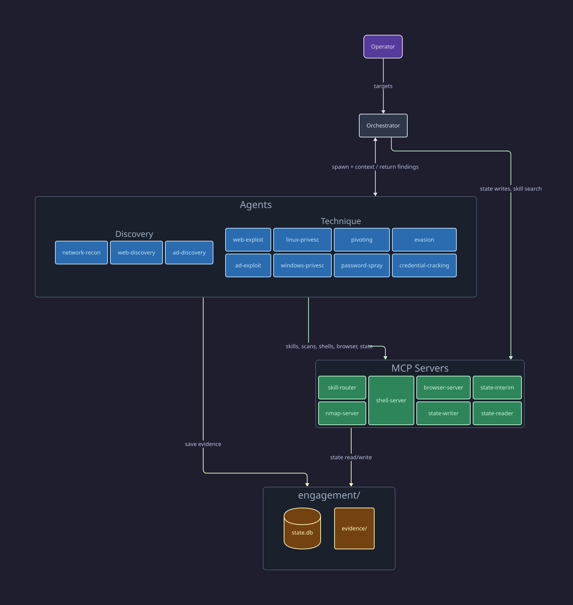
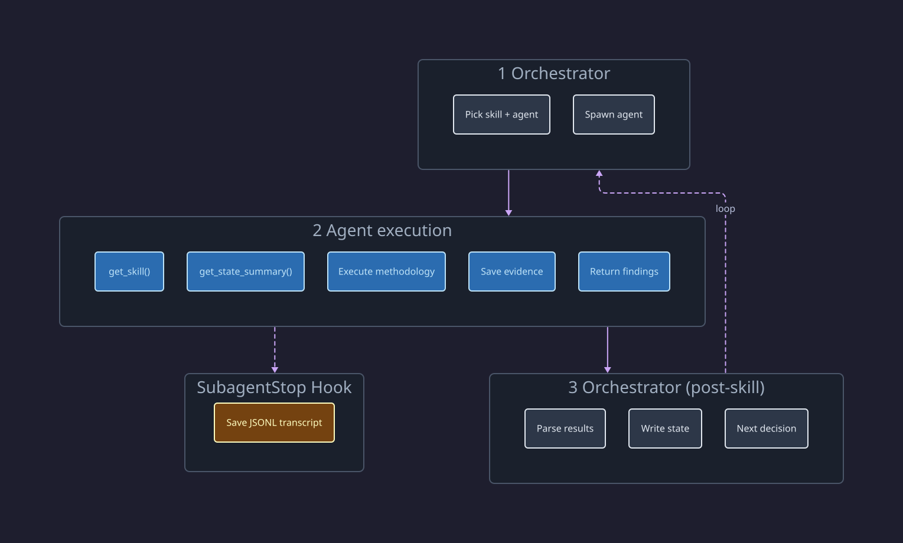

Architecture
red-run has two layers: a platform layer that provides capabilities, and a strategy layer that decides how to use them.
Platform vs Strategy
Platform layer (stable)
The platform is the set of reusable components that any engagement can use:
- Agents — 10 domain-specific subagents (web, AD, privesc, network, evasion, cracking)
- Skills — 67 technique-specific methodology files loaded on demand
- MCP servers — nmap scanning, shell management, browser automation, skill routing, state tracking
- Engagement state — SQLite database tracking targets, credentials, access, vulns, and pivot paths
- Dashboard — Real-time multi-agent monitoring
These components don't change based on engagement type. A CTF lab and a client engagement use the same agents, skills, and servers.
Strategy layer (swappable)
The orchestrator is the strategy layer. It reads engagement state, decides which skill to invoke next, spawns the right agent, and records findings. The current orchestrator (skills/orchestrator/SKILL.md) is a CTF/lab orchestrator — it chains aggressively, auto-routes to exploits, and treats everything in scope as fair game.
A different orchestrator could use the same platform with different decision logic:
- Client engagement orchestrator — mandatory operator approval before exploitation, stricter scope gates, OPSEC-first routing
- Red team orchestrator — stealth-focused, avoids detection signatures, operates within rules of engagement windows
- Training orchestrator — explains each decision, pauses for student input, provides hints
The orchestrator contract is simple: read state, pick a skill, spawn an agent, record findings. Everything else is implementation choice.
Architecture Overview

Prompt Architecture
red-run controls agent behavior through layered prompts, not code. Each layer adds specificity:
| Layer | File | Loaded When | What It Provides |
|---|---|---|---|
| Project | CLAUDE.md |
Every conversation | Architecture rules, conventions, skill routing mandate |
| Agent | agents/<name>.md |
Agent spawns | Role definition, MCP server access, tool usage rules, scope constraints, return format |
| Skill | skills/<cat>/<name>/SKILL.md |
get_skill() call |
Technique methodology, payloads, troubleshooting, inter-skill routing |
| Dynamic | Orchestrator's task prompt | Each agent invocation | Target info, state summary, previous findings, engagement-specific context |
The project layer sets universal rules (always load skills via get_skill(), never write state directly). The agent layer constrains to a domain (web-exploit-agent only does web techniques, uses state-interim for critical mid-run writes). The skill layer provides technique depth (exact payloads, variant detection, troubleshooting). The dynamic prompt carries live engagement state (what's been found, what to focus on, what's failed) plus operator-controlled runtime context such as the selected Burp listener for web work.
Understanding this stack is essential for extending red-run — whether writing new orchestrators, agents, or skills.
Agent → MCP Access
Each agent has access to specific MCP servers. All agents use state-interim (read + 5 add-only writes) so they can record critical discoveries mid-run.
| Agent | MCP Servers |
|---|---|
| orchestrator | skill-router, state-reader, state-writer |
| network-recon | skill-router, nmap-server, shell-server, state-interim |
| web-discovery | skill-router, shell-server, browser-server, state-interim |
| web-exploit | skill-router, shell-server, browser-server, state-interim |
| ad-discovery | skill-router, shell-server, state-interim |
| ad-exploit | skill-router, shell-server, state-interim |
| linux-privesc | skill-router, shell-server, state-interim |
| windows-privesc | skill-router, shell-server, state-interim |
| password-spray | skill-router, shell-server, state-interim |
| evasion | skill-router, shell-server, state-interim |
| credential-cracking | skill-router, state-interim |
See Agents for the full agent model and routing table.
Skill Invocation Lifecycle
What happens inside a single agent invocation:

- Orchestrator picks a skill and the correct agent from the routing table
- Agent loads the skill via
get_skill()from the skill-router MCP - Agent reads state via
get_state_summary()to understand current engagement context - Agent executes the skill methodology step by step, saving evidence along the way
- Agent returns a structured summary of findings (vulns, creds, access, pivots, blocked items)
- Hook captures the full JSONL transcript to
engagement/evidence/logs/ - Orchestrator records state changes and decides what to invoke next
Engagement Directory
engagement/
├── scope.md # Target scope, credentials, rules of engagement
├── state.db # SQLite engagement state (managed via state-server MCP)
├── dump-state.sh # Export state.db as markdown (from operator/templates/)
└── evidence/ # Saved output, responses, dumps
└── logs/ # Subagent JSONL transcripts
The orchestrator creates this directory and maintains scope.md and all state writes. Agents only write to evidence/ — raw tool output, screenshots, dumps. The SubagentStop hook automatically copies agent transcripts to evidence/logs/.
See Engagement State for the database schema and Running an Engagement for the full workflow.
Data Flow
State flows through the system in one direction:
- Agents discover findings (vulns, credentials, pivot paths) during skill execution
- All agents write critical discoveries mid-run via state-interim (5 add-only tools)
- All agents report findings in their return summary
- Orchestrator parses returns, deduplicates interim writes, records remaining state changes via state-writer
- Orchestrator reads updated state summary to make the next routing decision
- Next agent reads state via
get_state_summary()on activation — sees everything discovered so far
This ensures the orchestrator is the single source of truth for engagement state, while discovery agents can share urgent findings (like new credentials) with concurrent agents without waiting for their run to complete.
Privilege Boundaries
Claude Code never gets sudo. This is a deliberate design decision — an LLM with root access to your machine is an unnecessary risk, and red-run is architected so it's never needed.
The tools that require elevated privileges are isolated behind MCP servers and Docker containers:
| What needs privilege | How red-run handles it | Why not just sudo |
|---|---|---|
nmap SYN scans |
nmap-server runs nmap inside a Docker container with --network=host and minimal capabilities |
SYN scans need raw sockets, but Claude doesn't need root — Docker provides the capability isolation |
| Responder, mitm6, tcpdump | shell-server's privileged=True runs commands in the red-run-shell Docker container with NET_RAW/NET_ADMIN capabilities |
These daemons need raw sockets for poisoning/sniffing, but the privilege stays inside the container |
/etc/hosts changes |
Orchestrator hits a hard stop — presents the hostnames and asks the operator to add them manually | DNS resolution changes affect the entire system, not just the engagement |
| Clock skew correction | Orchestrator hits a hard stop — shows the required ntpdate or faketime command for the operator to run |
System clock changes affect every process on the machine |
| Outbound network access | Optional engagement firewall (operator/engagement-firewall/) blocks all outbound except Anthropic API + scope targets via nftables |
Internet access from the attackbox could leak engagement data or trigger non-scope traffic |
The pattern is consistent: if something needs elevated privilege, either it runs inside a container that has the specific capability, or the orchestrator stops and asks the operator to do it. Claude never runs sudo itself.
This also means red-run works without adding Claude Code to sudoers or NOPASSWD entries for privilege escalation on the host. The attack surface is the target, not your machine. Note that --dangerously-skip-permissions (yolo mode) is still required for subagent execution — see Installation.
You can enforce this at the Claude Code level by adding Bash(sudo *) to the deny list in ~/.claude/settings.json. This makes Claude Code refuse any Bash command starting with sudo, regardless of what an agent or skill tries to do:
{
"permissions": {
"deny": [
"Bash(sudo *)"
]
}
}
This comes from the Trail of Bits Claude Code hardening guide, which has other useful deny rules for destructive commands (rm -rf, git push --force, dd, etc.). See Installation for the recommended setup.
Network Isolation (Optional)
An optional nftables firewall is available in operator/engagement-firewall/ for operators who want OS-level network isolation. When activated, it restricts outbound traffic:
| Allowed | Why |
|---|---|
Loopback (lo) |
MCP servers, local listeners, inter-process communication |
| Established/related | Return traffic for accepted connections |
| DNS (system resolver) | Name resolution for scope targets |
Anthropic API (160.79.104.0/23, 2607:6bc0::/48) |
Claude Code functionality |
| Scope targets (operator-defined) | Engagement targets only |
Everything else is dropped. This prevents agents from reaching the internet — no tool downloads, no data exfiltration, no out-of-scope traffic.
The firewall is a static nftables ruleset. The operator edits the scope array and runs with sudo. Targets can be added live without restarting. See operator/engagement-firewall/README.md for setup.
Anthropic API IPs are published at the Anthropic IP addresses page and are stable ("will not change without notice").